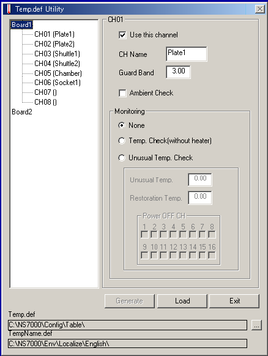
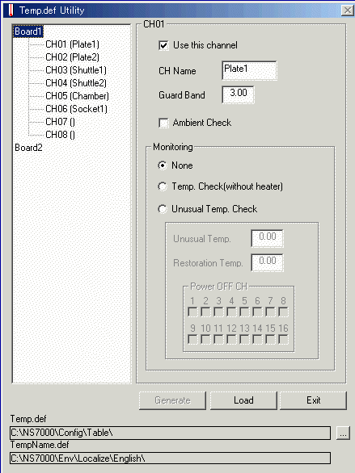

Service History
Subject: Xilinx NS-7080 Input Shuttle 2 show --- for temperature
Handler Model: NS-7080W (NS7KW-01, S/N: 121286)
Controller: RC520
Date: 31 May 2010
Symptom
After Input Shuttle 2 Slide Plate Installation, in MMI Input Shuttle 2 show "---" dash for temperature.
This indicates that Input Shuttle 2 temperature is disabled.
Action
Enable Shuttle 2 Heater in C:\NS7000\exe\TemperatureUtility.exe & MMI setup.
CH04(Shuttle2)
- Heatup for hot temperature 125 DegC, ok

Cause
Input Shuttle 2 Slide Plate spoilt and it's heater disabled.
Remarks
C:\NS7000\exe\TemperatureUtility.exe
C:\NS7000\config\Table\Temp.def ←"TemperatureUtilitiy.exe
